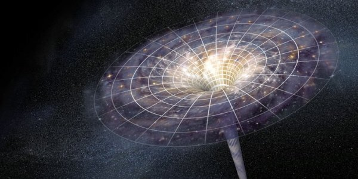

Что такое сингулярность
Каждый, кто сталкивался с термином «сингулярность», стремился осознать, а что же это такое? Если сделать дословный перевод с латыни, то окажется, что это единичность какого-то события, существа, явления. Понятие сингулярности (особенности) распространено во многих областях науки и техники, и обладает определённой специфичностью. В зависимости от этого, сингулярность может быть:
- математической;
- гравитационной;
- космологической;
- технологической;
- биологической.
Но если смотреть более философски, то сингулярность — это всё мироздание в крошечной точке. И это не только всё вещество Вселенной, но и наша жизнь, с её осознанием, значимостью и чувствами.
Космологическая сингулярность
Иначе, это то состояние, которое имела Вселенная в самый первый миг Большого взрыва. Оно характеризуется наличием бесконечных значений плотности и температуры вещества. Это состояние, ставшее примером сингулярности гравитационной, предсказано Эйнштейном в положениях общей теории относительности. Невероятно сложно представить, что Солнце можно сжать до размеров атомного ядра, но ещё труднее вообразить, что вся Вселенная была спрессована до точки, размер которой был много меньше этого ядрышка. Тем не менее, Вселенная возникла из такого объекта, именуемого сингулярностью. Этот вариант событий математически просчитан и является основной теорией возникновения окружающего мира. Но имеются определённые трудности, не объясняемые этой теорией.
- Никто не знает, где именно располагалась та точка, из сердцевины которой родилась наша Вселенная.
- Не понятно, каким образом эта особенность «родила» бескрайние количества энергии и материи.
- Неоднородность Вселенной тоже не совсем понятна. По всем канонам, она должна была стать однородной, но этой однородности не было даже в первичном газе.
- Известные нам физические законы, помогающие описывать привычный для нас мир, в случае сингулярности не работают. Из этого следует, что возможно описание только тех событий, что случились после Большого взрыва, но не сам взрыв и не преддверие его.
Гравитационная сингулярность
Если говорить сухим языком физических терминов, то это — точка, находящаяся в пространстве-времени, через которую нет возможности ровно проложить геодезическую линию. Зачастую гравитационная сингулярность делает бесконечными или неопределёнными величины, которые описывают гравитационное поле. К этим величинам относятся, например, плотность энергии или скалярная кривизна. Теория относительности подразумевает, что сингулярности должны возникать в процессе формирования чёрной дыры. Если они находятся под горизонтом событий, то наблюдать их нельзя. В случае же Большого взрыва имеет место голая сингулярность – её наблюдение вполне возможно, если, конечно, оказаться рядом. К сожалению, непосредственно увидеть её невозможно, поэтому она, исходя из уровня развития современной физики, является только теоретическим объектом. Когда будут разработаны положения квантовой гравитации, появится возможность описания пространства-времени вблизи этих объектов.
Сингулярность в математике
Математическое понятие данной особенности – это некоторая точка, в которой для математической функции характерно стремление к бесконечности. Либо функция обладает другими нерегулярностями поведения (в частности, критическая точка).
Технологическая сингулярность
Это понятие относится в основном к области футурологии, учения, пытающегося спрогнозировать будущее. спрогнозировать будущее. За основу в этом случае берутся некоторые имеющиеся тенденции в технологии, экономике, социальных явлениях, а потом производится их экстраполяция. спрогнозировать будущее. Считается, что вскоре наступит момент, когда прогресс в науке и технике станет недоступен пониманию человеческого разума. Вероятно, это станет реальным после того, как появится возможность создания искусственного интеллекта и наладится выпуск машин, воспроизводящих самих себя. К такому же результату приведёт интеграция человека с вычислительными машинами или же резкое изменение функциональности мозга человека с применением биотехнологий. Это и станет технологической сингулярностью, которую некоторые учёные предрекают в скором будущем.
В. Видж считает, что это случится уже в 2030 году, а Р. Курцвейл отодвигает революцию на год 2045-й.Сингулярность в биологии
В биологии это понятие используется не часто. Обычно оно применяется в качестве некоторых обобщений в эволюционном процессе.
Выводы и значение
Если математическая, техническая и биологическая сингулярности имеют вполне осязаемые параметры, то с особенностями других вариантов дело обстоит сложнее. Трудно оперировать понятиями, которые нельзя «пощупать» и оценить. Математические расчёты – вещь надёжная, но только в том случае, если объекты исследований достаточно материальны.
С сингулярностью всё иначе. Она не только не материальна, но ещё пока и не доказана. Поэтому и применение её, даже гипотетическое, вызывает вопросы. Если можно путешествовать сквозь неё, чтобы попасть в другие измерения, то как остаться целым, проходя сквозь гравитационные Сциллу и Харибду? Вероятно, у физиков со временем найдутся ответы на все вопросы. И мы обязательно узнаем их и наконец-то поймём, что же такое сингулярность.